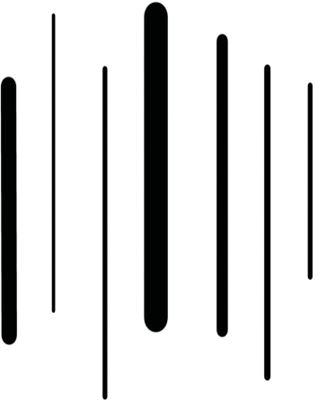

Figure 1.25: Vertical lines
Horizontal lines: These are straight lines parallel to the horizon drawn from left to right. They are used to suggest width, distance, calmness and stability. Figure 1.26 shows horizontal lines.
Figure 1.26: Horizontal lines
Diagonal lines: These are straight lines that slant in any direction except vertically or horizontally. They are used to suggest a sense of movement and lack of stability. Figure 1.27 shows diagonal lines.